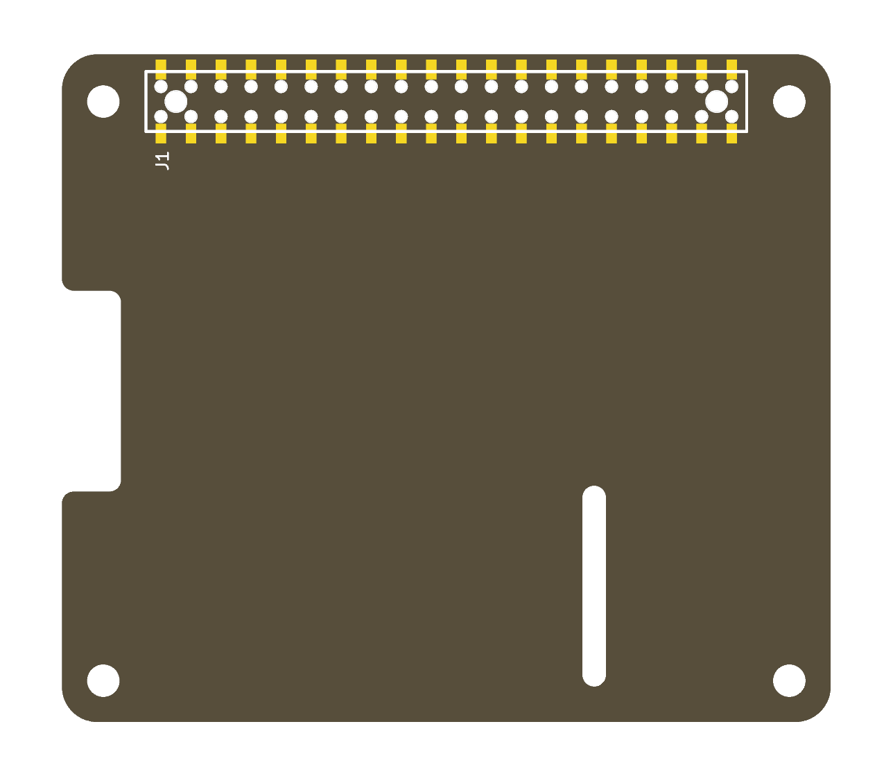

A 65 mm x 56.5 mm board to the Raspberry Pi HAT mechanical specification: the board outline with the display flex notch, the optional camera flex slot, four mounting holes and a Samtec HLE-120-02 surface-mount pass-through GPIO socket (J1).
The schematic holds the 40-pin GPIO connector with every pin named and unconnected. Wire up what the design uses and put a no-connect flag on the rest.
The symbol and the footprints are in the project's own
RPi_Hat libraries, so nothing else has to be installed.
The socket footprint puts each pad 0.127 mm from the hole its pin passes through, under this board's 0.25 mm hole clearance, and runs its silkscreen outline over the pads. DRC reports both until you change the rule or the footprint.

Derived from RPi_Hat_Template by Dave Vandenbout. MIT licence.